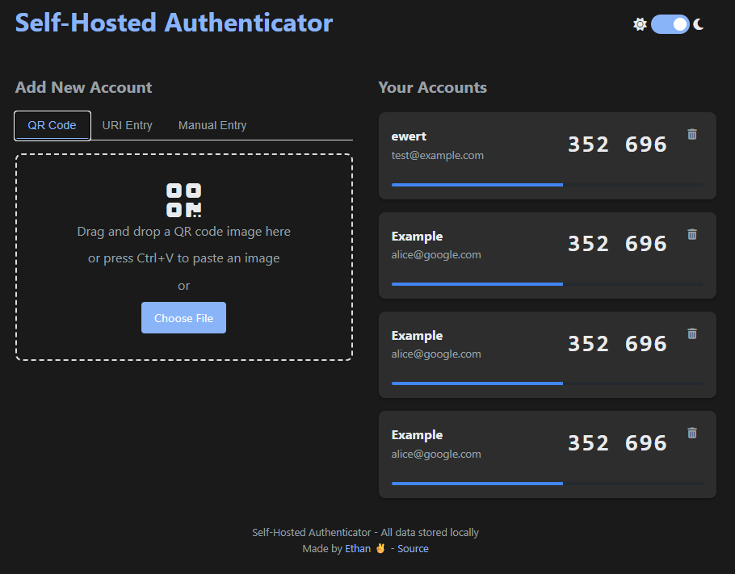
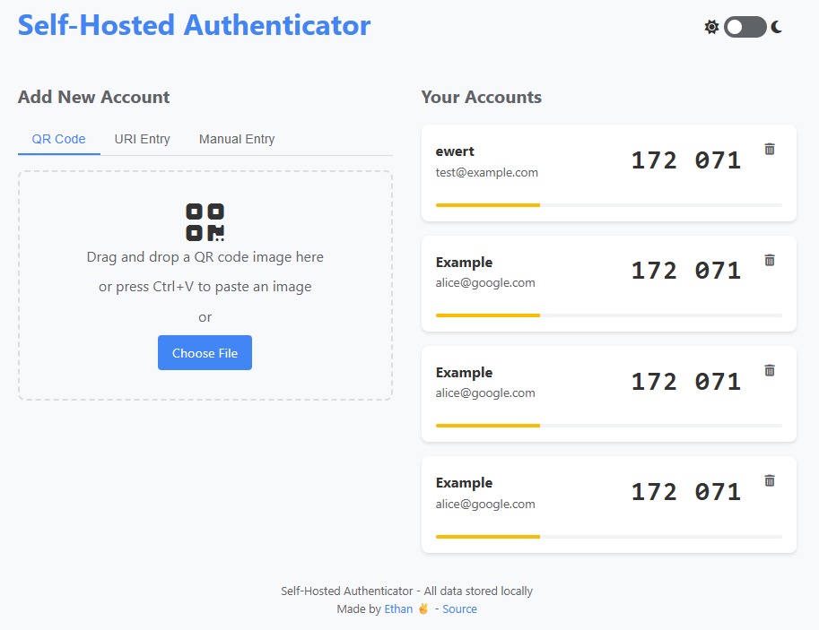

Self-Hosted TOTP Authenticator
A desktop-based 2FA solution for managing multiple TOTP authenticator codes without reaching for your phone.
View on GitHubBuilt With
This project arose from my daily workflow as a cloud computing tutor. Marking hundreds of student environments requires setting up 2FA repeatedly, which became tedious with constant phone usage. While Linux oathtool helped, forgetting to note down secret keys meant repeatedly setting up the same accounts, tedious part 2.
The Self-Hosted Authenticator is a desktop-based TOTP (Time-based One-Time Password) solution that eliminates the need to reach for your phone, running locally in a Docker container. It supports adding unlimited accounts and provides a clean, simple interface for managing 2FA codes.
Screenshots

Dark Interface

Light Interface
Key Features
- Docker Containerization - Easy deployment on any machine
- QR Code Scanning - Add accounts by scanning QR codes directly through the web interface
- Manual Entry Support - Add accounts manually by entering TOTP secrets
- Visual Countdown Timers - See when each code will refresh
- Persistent Storage - SQLite database ensures your accounts remain saved
- Offline Operation - Works entirely locally for security
- Clean, Minimal UI - Distraction-free interface focused on functionality
- Bulk Account Management - Add, view, and delete accounts easily
Development Challenges
During development, I encountered and overcame several technical challenges:
Challenge #1: Database Selection
Initially, I chose NeDB since it provides a MongoDB-like API for JavaScript. I wanted something flexible that could be embedded directly in the app. However, after implementation began, I encountered issues with permissions and security alerts - NeDB is no longer maintained and has some lingering bugs.
Solution: Switched to SQLite for better reliability, broader community support, and stronger persistence guarantees.
Challenge #2: Parsing TOTP URIs
When adding a TOTP URI containing an email address, characters were being incorrectly parsed or dropped entirely, breaking the authentication. The issue was in the parseOTPAuthURI function, where Node's URL parser was struggling with the custom otpauth:// URI scheme.
Solution: Created a custom parser that:
- Manually extracts the path portion of the URI
- Properly decodes URL-encoded components with decodeURIComponent
- Handles query parameters correctly with URLSearchParams
Challenge #3: QR Code Scanning Integration
Initially tried to use Canvas dependencies for QR code scanning, but ran into version incompatibility issues in the containerized environment.
Solution: Switched to jsQR library, which provided more reliable QR code detection with fewer dependencies.
Security Considerations
This project is designed for personal use and implemented with basic security measures:
- All data is stored and processed locally - no communication with external servers
- Docker containerization provides isolation from the host system
- Input validation and query safety measures are implemented
- CryptoJS is used for some client-side encryption capabilities
It's important to note that this tool lacks enterprise-grade security features like proper authentication for the web interface, advanced database encryption, audit logging, or intrusion detection. It's suitable for personal use but would need significant security enhancements for any production environment.
For the full code and documentation, visit the GitHub repository.